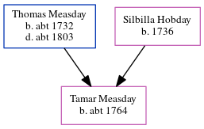

Mercy Rye (née Measday) c1767 - c1838
[ Home ] | [ Calendar ] | [ Surnames Index ] | [ Errors ] | [ Family History ]The child of Thomas Measday and Silbilla Hobday, Mercy Measday, the five times great-aunt of Nigel Horne, was born c. 1767, was baptised in Stodmarsh, Kent, England on 25 Jan 1767 and married Daniel Rye (with whom she had 3 children: Sarah, Mary and Ann) in Ickham, Kent, England on 12 Apr 17883.
She died c. Jan 1838 in Bridge, Kent, England1,2 and was buried at Holy Innocents, Adisham, Kent on 23 Jan 18384.
Parents
- Thomas was born c. 1732
- Silbilla was born in 1736
Children
- Sarah was born c. 1788
- Mary was born c. 1790
- Ann was born c. 1804
Citations
- East Kent Burial Index - Findmypast
- England & Wales deaths 1837-2007 - Findmypast
- England Marriages 1538-1973 - Findmypast
- Kent, Canterbury Archdeaconry Burials - Findmypast
Media
England Marriages 1538-1973 - R_847850491/2
England & Wales deaths 1837-2007 - BMD/D/1838/1/PZ/000193/005
Kent, Canterbury Archdeaconry burials - GBPRS/CANT/D/95218984
East Kent Burial Index - GBPRS/D/407096317/1
Family Tree
Map
Generated by ged2site. Last updated on Jul 3, 2024
Known Issues
Birth date (abt 1767) has no citations
Date of birth is known, but not place